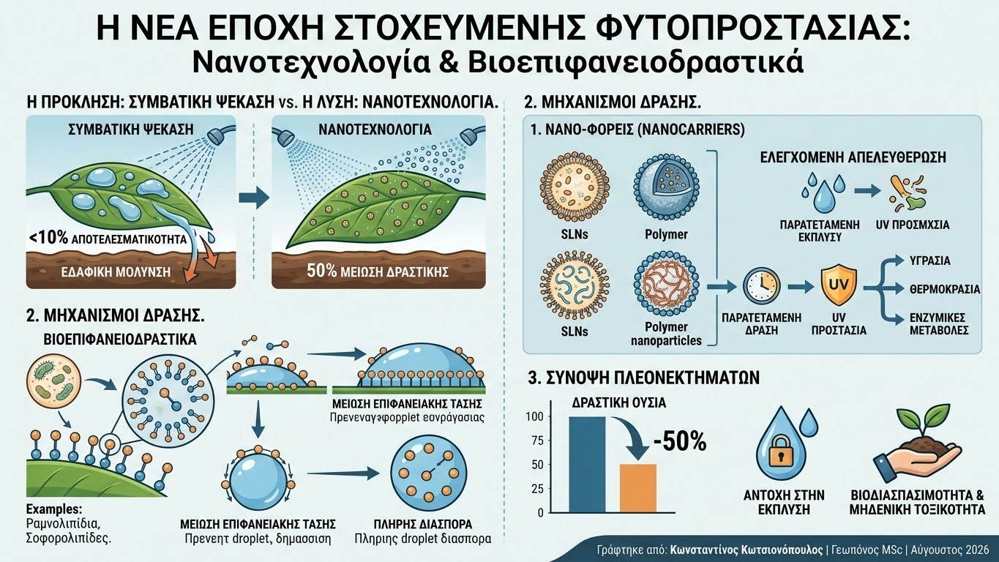

Στη συμβατική φυτοπροστασία, υπολογίζεται επιστημονικά ότι λιγότερο από το 10% της εφαρμοζόμενης δραστικής ουσίας φτάνει τελικά στον επιδιωκόμενο στόχο (παθογόνο ή έντομο), ενώ το υπόλοιπο χάνεται λόγω απορροής, φωτοδιάσπασης, εξάτμισης ή έκπλυσης στον υδροφόρο ορίζοντα. Η επιτακτική ανάγκη συμμόρφωσης με τις ευρωπαϊκές οδηγίες για τη μείωση του χημικού φορτίου αναδεικνύει τη Γεωργική Νανοτεχνολογία (Agri-Nanotechnology) και τα Βιοεπιφανειοδραστικά (Biosurfactants) ως τους βασικούς μοχλούς της πράσινης μετάβασης.
Στον πυρήνα αυτής της προσέγγισης βρίσκεται η τεχνολογία των Νανο-φορέων (Nanocarriers), όπως τα νανογαλακτώματα (nanoemulsions), τα στερεά νανοσωματίδια λιπιδίων (SLNs) και τα πολυμερικά νανοσωματίδια χιτοζάνης. Μέσω της νανο-ενθυλάκωσης (nanoencapsulation), οι δραστικές ουσίες —είτε πρόκειται για φυσικά εκχυλίσματα είτε για συνθετικά μόρια— προστατεύονται από την πρόωρη διάσπαση λόγω υπεριώδους (UV) ακτινοβολίας. Επιπλέον, το σύστημα επιτρέπει την ελεγχόμενη και παρατεταμένη απελευθέρωση (smart/controlled release) της ουσίας, ανταποκρινόμενο σε ερεθίσματα του περιβάλλοντος όπως η υγρασία, η θερμοκρασία ή οι ενζυμικές μεταβολές στην επιφάνεια των προσβεβλημένων ιστών.

Παράλληλα, η αντικατάσταση των συνθετικών προσκολλητικών και διαβρεκτικών παραγόντων από βιοεπιφανειοδραστικά μικροβιακής προέλευσης (όπως τα ραμνολιπίδια και οι σοφορολιπίδες από στελέχη Pseudomonas και Bacillus) μεταμορφώνει τη φυσική της διαβροχής. Τα μόρια αυτά μειώνουν δραστικά την επιφανειακή τάση του ψεκαστικού διαλύματος, επιτρέποντας την ομοιόμορφη διασπορά ακόμα και σε έντονα κηρώδεις φυλλικές επιφάνειες (π.χ. ελιά, κράμβες), εξαλείφοντας το φαινόμενο της δημιουργίας σταγονιδίων που απορρέουν στο έδαφος.
Τα επιστημονικά τεκμηριωμένα πλεονεκτήματα των νανο-σκευασμάτων περιλαμβάνουν:
- Μείωση της Απαιτούμενης Δραστικής Ουσίας: Η αυξημένη διαπερατότητα και η παρατεταμένη δράση επιτρέπουν τη μείωση των εφαρμοζόμενων ποσοτήτων έως και κατά 50%, διατηρώντας ή και βελτιώνοντας την αποτελεσματικότητα.
- Βελτιωμένη Προσκόλληση και Αντοχή στην Έκπλυση: Το εξαιρετικά μικρό μέγεθος των σωματιδίων (< 100 nm) και οι βιολογικές ιδιότητες των βιοεπιφανειοδραστικών εξασφαλίζουν αντοχή του ψεκαστικού φιλμ απέναντι σε βροχοπτώσεις.
- Βιοδιασπασιμότητα και Μηδενική Τοξικότητα: Σε αντίθεση με τα παραδοσιακά πετροχημικά διαβρεκτικά, τα βιοεπιφανειοδραστικά αποδομούνται ταχύτατα από τους ωφέλιμους μικροοργανισμούς του εδάφους χωρίς να αφήνουν τοξικά κατάλοιπα.
Η σύζευξη της νανοτεχνολογίας με τη γεωπονική επιστήμη δεν αποτελεί απλώς μια εργαστηριακή καινοτομία, αλλά μια ρεαλιστική απάντηση στις σύγχρονες καλλιεργητικές προκλήσεις. Η στοχευμένη και αποδοτική διαχείριση της φυτοπροστασίας προστατεύει την υγεία των οικοσυστημάτων και διασφαλίζει την παραγωγή ασφαλών αγροτικών προϊόντων υψηλής προστιθέμενης αξίας.